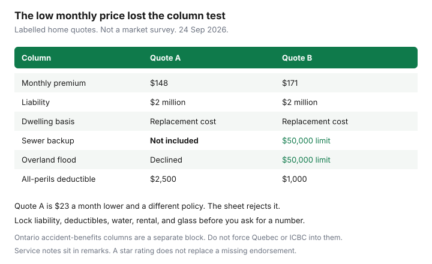

Insurance · Canada
Build an Apples-to-Apples Canadian Insurance Quote Spreadsheet Before You Switch
Quote shopping fails when each insurer prices a different shape and the household compares the monthly draft. One policy has sewer backup. One has a $2,500 deductible. One declined income replacement. The lowest number wins a contest you did not mean to enter. This page is the sheet that stops that. It supports the renewal negotiation, the home switch, and the auto mid-term math. It does not replace those decisions.
Build it in any spreadsheet. One row per quote, one column per coverage you refused to leave to chance. Print it or save a PDF with the quotes so next year’s you can see what you locked.
Disclosure: Broker quote portals are an offer type. Saving Optimizer may earn a commission if we later add partner links. We do not currently claim insurer or broker partnerships. We do not sell policies. A portal can fill the sheet. The sheet decides which quote is the same product. Education only.
Key takeaways
- Write the limits, deductibles, and endorsements before you request a quote. A market that cannot match a line has to say so in remarks.
- Give every quote the same columns: premium, tort or accident-benefits choices, water and flood, rental or loss of use, liability, and glass.
- In Ontario, record whether optional accident benefits stay on, and at which amounts. A cheaper quote that declined income replacement is a different policy after 1 July 2026.
- Exclusions and “not offered” belong in remarks. Do not let a monthly price average them away.
- Score service with facts you can point to: a person you can call, a broker, a claims process in writing. Re-run the sheet every renewal.
Lock coverage limits, deductibles, and endorsements before requesting quotes
Open last year’s declarations and type the limits you intend to keep. Change a limit only on purpose, in a note at the top of the sheet, before anyone prices it. The header of the sheet is the instruction to the broker and to the direct writer: “Quote this. If you cannot, write ‘not offered’ in that cell. Do not substitute a lower limit to make the premium smaller.”
For a home or tenant row, lock the dwelling or contents limit, the settlement basis, the all-perils or named-perils deductible, liability, sewer backup, overland flood, and any scheduled items. For an auto row, lock liability, collision and comprehensive deductibles, glass, rental, and the accident-benefits elections your province actually uses. Kilometres, drivers, and the garaging address are inputs, not coverage. They must be identical on every quote or the prices are not comparable. An honest commute change is a reason to re-shop. It is not a reason to let one quote assume 5,000 kilometres and another assume 20,000.
Send that header with the written market request. A broker who returns three prices on three different deductibles has not finished the assignment.
Columns: premium, tort/AB options, water/flood, rental, liability, glass
Use these columns even if you hide a few for a tenant policy that has no dwelling. Empty cells are allowed. Silent cells are not. If the quote did not mention the column, the cell says “not stated,” and that quote is incomplete.
| Column | What you type | Reject the quote when |
|---|---|---|
| Premium | Annual and monthly, including fees and tax the quote showed | You only have a teaser rate with no PDF |
| Tort / accident benefits | The provincial system, plus each optional benefit you kept or declined | An Ontario quote drops income replacement you did not agree to drop |
| Water / flood | Sewer limit and deductible; overland limit and deductible; or declined / not offered | The cell is blank on a house |
| Rental | Auto: loss-of-use limit per day and maximum. Home: additional living expenses limit. | You need a car or a hotel and the cell says none, unless you chose that |
| Liability | The limit you locked, usually $1 million or $2 million on a household quote | It fell to a compulsory floor you did not pick |
| Glass | Auto glass deductible, or “no separate glass cover” | One quote has $0 glass and another has the full collision deductible, and you treat them as equal |

The figure is the failure mode. Quote A at $148 a month and quote B at $171 are not $23 apart if A has no sewer backup, no overland flood, and a higher deductible. The sheet’s job is to make that obvious without a forum argument. Ontario’s compulsory auto liability floor is $200,000. Do not let a quote “win” by sitting on that floor when every other column says $2 million.
Normalize voluntary/accident benefits choices in Ontario-style policies
Ontario policies effective on or after 1 July 2026 still include mandatory medical, rehabilitation, and attendant care. FSRA’s published amounts, as recorded on our accident benefits guide, are $65,000 non-catastrophic and $1,000,000 catastrophic, with buy-ups available. Income replacement and other non-medical benefits are optional on new policies. Income replacement is described there as 70 percent of gross, up to $400 a week, or optional higher weekly maximums of $600, $800, or $1,000. The minor-injury cap of $3,500 plus HST under O. Reg. 34/10 s. 18 remains for accidents on or after 3 June 2019. Renewals keep prior optional amounts unless you decline them in writing. OPCF 49, the direct-compensation opt-out available since January 2024, is not an accident-benefits choice.
So the Ontario block on the sheet is a set of yes/no and dollar cells, not one word “standard.” Record: medical/rehab/attendant care at the mandatory amount or a named buy-up; income replacement declined or the weekly maximum; caregiver, housekeeping, and dependent care if you were offered them; optional catastrophic buy-ups if any. A quote that is cheap because income replacement is off is comparable only to other quotes with income replacement off. If your job cannot survive a $0 weekly benefit, that column is not where you save.
Do not force this block onto other provinces. Québec bodily injury is SAAQ. Alberta prices DCPD and its own accident benefits. British Columbia basic is ICBC. Add a “provincial system” column and leave the Ontario benefit cells blank outside Ontario, with a remark. The Québec private-damage guide and the ICBC guide are the local shapes.
Note exclusion differences in remarks—not only the monthly price
Remarks are a column, not a feeling. Use them for exclusions and mismatches the price will hide.
- Roof settlement that is actual cash value after a certain age, while the rest of the dwelling is replacement cost.
- Sewer backup “included” at $5,000 when your sheet asked for the limit you had last year.
- A tenant quote that met the contents number and missed the lease’s liability number.
- An auto quote that removed collision on a financed car, or that assumed winter tires you do not have.
- A vacancy, woodstove, or oil-tank condition on a cottage. Send those quotes to the cottage page before you treat them as a city-home row.
If two quotes differ only in remarks, the cheaper one is not ahead. Either fix the remark by adding the endorsement, or stop comparing them. Price is the last sort, after the remarks column is clean. A broker portal that sorts by “lowest monthly” is useful as a list of phone calls. It is a bad sort key for the decision.
Score service: claims rating, broker access, digital tools
Service is real and easy to fake with stars. Score it yourself, 1 to 5, on facts:
- Claims path in writing. You can find how to open a claim, and the company is a GIO subscriber for property and auto or an OLHI participant for life and health, if that is the product. A missing ombuds door is a remark, not an automatic zero.
- A person. Broker, agent, or a direct desk that answered the coverage question. “Chatbot only” is a score you choose with your eyes open.
- Tools you will actually use. Electronic proof of insurance, a claims photo upload, a declaration PDF you can download. Pretty apps do not replace the sewer limit.
Do not type a satisfaction percentage you saw in an ad. This site does not publish a national claims ranking, and you should not invent one in the sheet. If you have had a claim with the company, your own experience outranks a billboard. If you have not, leave the score modest and let the coverage columns decide. A perfect service score on a policy that deleted flood cover is still a deleted flood cover.
Re-run the sheet every renewal so decisions stay consistent
Save the sheet with the renewal year in the file name. Next year, duplicate the tab. Do not start from a blank page and do not let a portal overwrite the limits. The annual review is the sitting. Forty-five days out, send the same header to one broker panel and one direct writer. Paste the new premiums into the new tab. Highlight any cell that changed without your note: a deductible, a dropped endorsement, a loyalty line that grew while the base grew faster.
The decision rules stay stable so you do not relitigate them under a deadline. Renew if the same-shape price is competitive. Switch if another row matches every locked cell and the dollars survive cancellation costs. Split auto and property if the winning rows are different companies after you add back the multi-policy discount. Those rules are the loyalty guide and the switch guides. The spreadsheet is how you keep them honest.
If a life change hits mid-year (a move, a teen driver, a new mortgage), add a row rather than editing history. The new-home checklist and the teen-driver checklist are the events. The sheet is where the new quote has to land before you cancel the old one.
Sources & date stamps
- FSRA, purchasing auto insurance and working with your broker or company: compare coverage, not only price; ask what a broker represents. Used 24 Sep 2026.
- Ontario accident benefits from 1 July 2026, as summarized on the accident-benefits guide from FSRA materials: mandatory medical, rehabilitation, and attendant care; optional income replacement on new policies; OPCF 49 is not an accident-benefits decline. Used 24 Sep 2026.
- Financial Consumer Agency of Canada, get insurance: shop coverage and price together. Used 24 Sep 2026.
- The $148 / $171 figure on this page is a labelled illustration, not a quote.
Frequently asked questions
What columns should a Canadian insurance quote spreadsheet have?
Premium, tort or accident-benefits choices, water and flood, rental or additional living expenses, liability, and glass. Add remarks for exclusions. Lock those limits before you ask for prices.
Why do two cheap quotes not match?
They are often different deductibles, different liability, or a missing sewer or flood endorsement. If a cell says not offered or not stated, do not sort that row as the winner.
How do I compare Ontario accident benefits?
Record the mandatory medical and attendant-care amount or buy-up, and whether income replacement is on and at which weekly maximum. After 1 July 2026, optional income benefits can be declined on new policies. A decline is a different product.
Should I trust a comparison site’s ranking?
Use it as a list of quotes to paste into the sheet. Bind only when the PDF matches the columns. Broker portals are an offer type, not a decision.
How often do I rebuild the sheet?
Every renewal, from a copy of last year’s tab, plus a new row when you move, add a driver, or change a mortgage. Do not let a portal reset the limits.